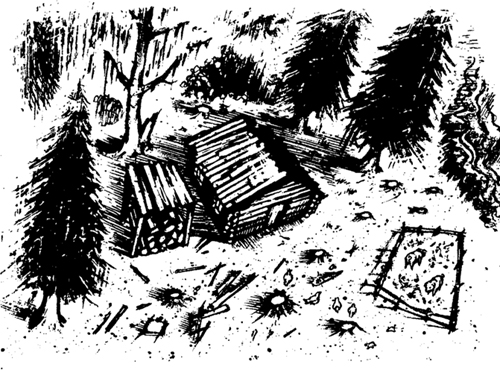
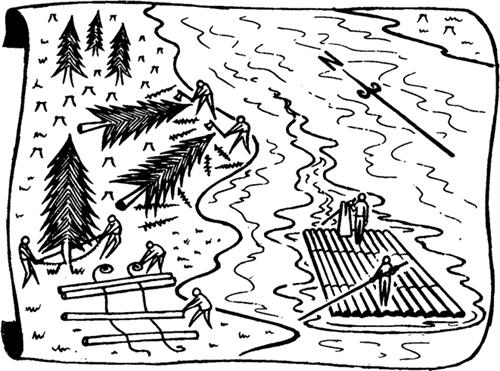
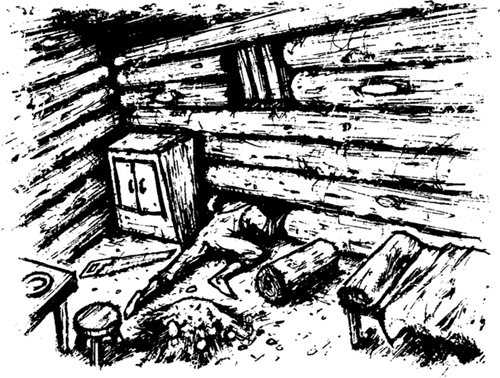

2

Ngôi nhà gỗ trong rừng
Tôi đã nói sự thật với bạn. Tôi không cảm thấy hạnh phúc với Bà Douglas và Cô Watson. Tôi không thích đi học và tôi không thích đọc Kinh thánh. Học thì chán. Kinh thánh thì nhàm chán. Mọi thứ trong cuộc sống của tôi đều chán ngắt! Nhưng một buổi tối, bố tôi trở về St Petersburg. Sau đó, tôi lại muốn có một cuộc sống nhàm chán!
Tối hôm đó, tôi vào phòng ngủ lúc chín giờ. Bố tôi đang ở trong phòng. Người đợi tôi. Ông đã trèo vào phòng qua cửa sổ. Tóc ông dài và quần áo thì bẩn. Ông cầm một chai rượu whisky. Ông đã say.
Tôi muốn gọi Bà Douglas, nhưng bố tôi đã lấy tay che miệng tôi lại.
Ông nói: "Câm đi! Nghe ta nói này! Con là một đứa con tồi! Ta đã nghe về con. Ngày nào con cũng đi học! Con học đọc và học viết! Tại sao? Ta chưa bao giờ đi học. Ta không biết đọc và viết! Tại sao con lại muốn biết đọc và biết viết?"
Bố tôi nói: "Con là con ta". Bố tôi tát tôi một cái. "Nhưng con chưa bao giờ là một đứa con ngoan với ta. Giờ mọi chuyện sẽ khác. Con sẽ trở thành một đứa con ngoan! Ta đã nghe nói về số tiền của con. Con có 6.000 đô la. Giờ đó là tiền của ta. Ta muốn lấy. Con lấy cho ta! Ngày mai lấy! Con hiểu ta không?"
Tôi đáp: "Tôi hiểu bố. Nhưng tôi sẽ không đưa tiền cho bố đâu!"
Thế rồi bố tôi lại tát tôi. Ông nói: "Ngày mai con phải lấy tiền cho ta. Và đừng kể cho bất kỳ ai biết là ta đã tới đây".
Ông nhanh chóng trèo ra cửa sổ. Ông biến mất trong màn đêm.
Ngày hôm sau, bố tôi đã nói chuyện với Chánh án Thatcher. Buổi tối, Bà Douglas kể lại cho tôi nghe.
Bố tôi nói với chánh án: "Hãy đưa 6.000 đô la cho tôi. Giờ nó là tiền của tôi!"
Chánh án Thatcher trả lời: "Không! Nó không phải là tiền của ông! Nó là tiền của Huckleberry. Và tôi sẽ giữ nó cho thằng bé!"
Bố tôi nói với luật sư: "Tôi muốn lấy lại số tiền của Huck từ tay Chánh án Thatcher. Tôi phải làm thế nào?"
Luật sư đáp: "Ông phải yêu cầu số tiền trong một phiên tòa. Ông phải nói với thẩm phán khác về số tiền này. Ông yêu cậu con trai của mình và muốn cậu ấy sống với ông. Ông phải nói với thẩm phán điều đó. Thẩm phán sẽ lắng nghe ông. Nhưng thẩm phán cũng sẽ lắng nghe Chánh án Thatcher. Ngài sẽ lắng nghe cả hai người. Sau đó, ngài sẽ đưa ra quyết định."
Luật sư tiếp: "Nhưng Chánh án Thatcher là một người khôn ngoan. Ngài biết luật pháp. Ngài quen biết các thẩm phán khác. Một thẩm phán sẽ lắng nghe câu chuyện của ông, nhưng ông sẽ phải chờ nhiều tuần. Liệu thẩm phán có đưa tiền cho ông không? Tôi không biết. Hiện con trai ông không sống với ông. Đó sẽ là vấn đề với ông".
Sáng hôm sau, tôi bắt đầu đi học. Nhưng bố tôi đang đợi tôi gần nhà Bà Douglas. Ông tát tôi một cái rồi nắm lấy tay tôi.
Ông hét lên: "Con phải đi với ta! Giờ con sẽ sống với ta!"
Bố tôi đưa tôi tới một ngôi nhà gỗ cũ. Ngôi nhà nhỏ này nằm gần Sông Mississippi, cách thị trấn mấy dặm. Xung quanh nhà có rất nhiều cây cao. Không ai biết về ngôi nhà và không ai đến đó. Ngôi nhà gỗ là một nơi bí mật. Nó trở thành nơi ở của chúng tôi.
Ngày nào bố tôi cũng ra ngoài, nhưng ông lại nhốt tôi trong nhà gỗ. Tôi cô đơn và buồn. Tôi muốn gặp Tom Sawyer. Tôi muốn gặp Bà Douglas. Tôi muốn gặp Cô Watson!
Ngôi nhà gỗ thì cũ nhưng rất kiên cố. Có người đã dựng nó lên từ những thân gỗ lớn. Cánh cửa gỗ cũng rất kiên cố, và có một ổ khóa chắc chắn trên cửa.

Bạn đang tự hỏi rằng: bố tôi làm gì hằng ngày? Đây chính là câu trả lời - ông bán gỗ.
Vào thời điểm đó của năm, có rất nhiều thân gỗ lớn trên sông. Chúng trôi theo dòng sông từ phía bắc xuống. Ở phía bắc đất nước, người ta chặt những cây lớn gần sông. Họ dùng cưa để chặt, rồi cắt cây thành từng khúc gỗ. Họ dùng dây thừng để buộc nhiều khúc gỗ lại với nhau - họ biến những khúc gỗ đó thành những bè gỗ lớn.

Những người đàn ông đi trên những chiếc bè này. Họ đi về phía nam, xuôi theo con Sông Mississippi hùng vĩ. Những chiếc bè trôi theo dòng sông và những người đàn ông sống trên bè. Sau đó, một ngày nọ, họ tháo dây buộc những khúc gỗ ra. Họ bán gỗ cho dân cư ở các thị trấn và thành phố ven sông.
Các khúc gỗ trên bè được buộc lại với nhau bằng dây thừng. Nhưng đôi khi, dây thừng bị đứt. Sau đó, bè gỗ bị vỡ. Những người đàn ông bơi vào bờ và các khúc gỗ trôi tiếp trên sông.
Ngày nào bố tôi cũng ra bờ sông để tìm những khúc gỗ lớn, tốt. Sau đó, ông chèo thuyền độc mộc cũ tới đó. Ông kéo những khúc gỗ tới St Petersburg và bán chúng tại đó. Ông dùng số tiền đó để mua thức ăn cho hai bố con. Và ông mua rượu whisky cho mình.
Tối nào ông cũng say khướt. Và tối nào ông cũng đánh tôi. Ông hét vào mặt tôi.
Ông hét lên một tối: "Mi không phải con trai ta! Mi là Thần chết! Mi muốn giết ta. Nhưng ta sẽ giết mi!
Ngày nào bố tôi cũng tệ hơn. Ngày nào tôi cũng sợ hơn. Tôi nghĩ: "Sớm muộn gì ông ta cũng giết mình". Tôi phải trốn khỏi nhà gỗ này!
Một buổi sáng, tôi đang đào đất ở một góc nhà gỗ. Bỗng nhiên, tôi tìm thấy một cái cưa cũ. Nó không to và không sắc. Nhưng tôi nhìn nó một lúc rồi bắt đầu nghĩ về việc trốn thoát. Có một cái tủ trong nhà gỗ, ở cạnh tường. Tôi kéo cái tủ ra khỏi tường. Sau đó, tôi bắt đầu dùng cưa cắt bức tường nhà gỗ. Suốt cả ngày, tôi cắt một trong những khúc gỗ ở gần mặt đất. Đến tối, tôi đã cắt xong khúc gỗ. Rồi bố tôi quay trở lại nhà gỗ. Tôi nghe thấy tiếng ông và đẩy cái tủ ra trước khúc gỗ đã cắt.
Một lát sau, bố tôi đi vào. Ông rất tức giận. Ông không lấy được tiền cũng không lấy được rượu whisky. Ông tát tôi một cái rất mạnh.
Sáng hôm sau, bố tôi ra ngoài rất sớm. Tôi kéo tủ ra khỏi tường rồi bắt đầu cắt khúc gỗ ở một chỗ khác. Tôi thực hiện vết cắt mới cách vết cắt đầu tiên hai feet.
Buổi chiều, tôi cắt xong khúc gỗ. Tôi cẩn thận nhấc miếng gỗ ra khỏi tường và chui qua lỗ hổng.

Tôi chạy thật nhanh đến bờ sông. Chẳng mấy chốc, tôi tìm thấy một chiếc thuyền độc mộc cũ. Vài phút sau, tôi chèo thuyền tiến về Đảo Jackson.